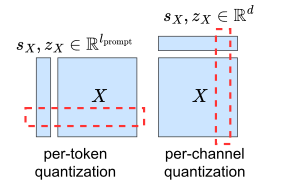
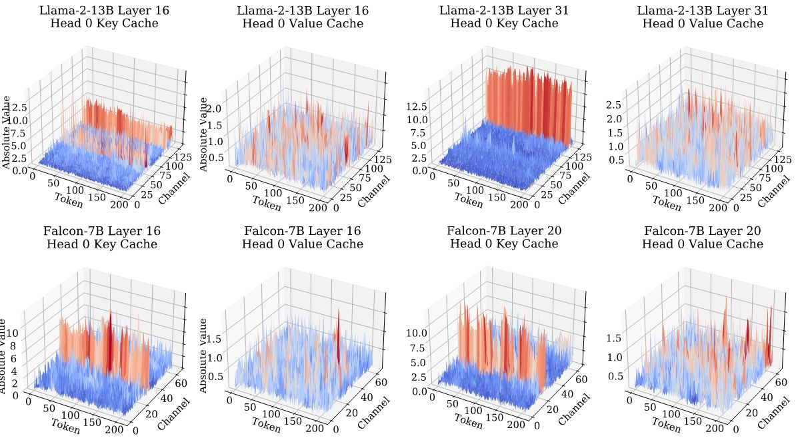
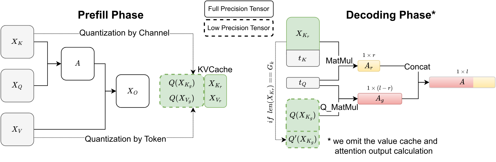
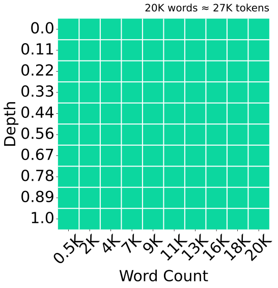
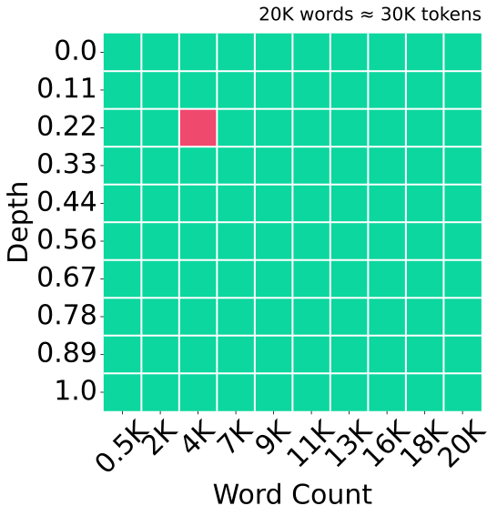
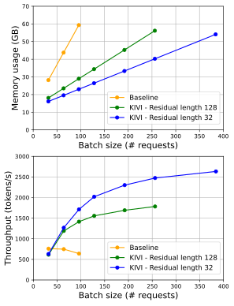

KIVI：不用调参的非对称 2 bit KV 缓存量化
KIVI: A Tuning-Free Asymmetric 2bit Quantization for KV Cache
阅读状态、进度与收藏只保存在你的浏览器里。
逐节精读
这部分按论文的章节顺序，用本站自己的话把整篇论文从头讲一遍。读懂某个概念需要的背景知识，会在第一次用到它之前单独讲清楚（青色框）。每个结论都尽量说出“因为什么、所以什么”。论文以 CC BY 4.0 发布，所以原图直接放在讲到它的地方；原图没画到的概念，用本站的示意图补上。标“推算”的数字是本站根据论文数据或公开代码算出来的，不是论文原话。每节末尾有英文原文的链接。
0 导读：这篇论文解决什么问题
大模型推理服务想降低每个请求的成本，最直接的办法是把很多请求放进一个批（batch）一起算。批越大、上下文越长，模型为每个请求保存的 KV 缓存（每一层注意力算过的 key 和 value）就越大。它会带来两个麻烦：一是显存装不下，批开不大；二是每生成一个 token 都要把全部 KV 缓存从显存读一遍，读的时间比算的时间还长。想同时缓解这两个问题，最简单的办法是让每个数占更少的字节，也就是量化。
在这篇论文之前，KV 缓存的量化基本只停留在“每个 token 一组、4 bit、四舍五入”这种最朴素的做法上，再往下压到 2 bit，模型的准确率就明显崩掉。作者先做了一个细致的观察：key 缓存里有少数几个固定的通道数值特别大，value 缓存则没有这种规律。由此得出一个不对称的方案：key 按通道分组量化，value 按 token 分组量化。因为按通道分组要跨越多个 token，而 token 是一个一个生成出来的，作者又设计了“分组量化部分 + 最近若干个 token 保持全精度”的流式数据结构，并写了把反量化和矩阵乘融合在一起的 GPU 内核。这套方法叫 KIVI，不需要任何校准数据或微调。
论文报告：在 Llama-2、Mistral 上，2 bit 的 KIVI 在常规生成任务和长上下文任务上的分数与 16 bit 很接近（Falcon-7B 需要 4 bit）；在一张 A100-80GB 上跑 Llama-2-7B，同样的显存能装下 4 倍的批，吞吐量是 16 bit 基线的 2.35–3.47 倍。后面第 6 节会把这些数字背后的比较条件一条条拆开：基线是什么、批多大、序列多长、精度和速度是不是在同一设置下测的。
读完这部分，你应该能回答这几个问题：
- KV 缓存为什么会同时卡住显存容量和解码速度？
- 整数量化里的缩放因子、零点、分组、“按 token”和“按通道”分别是什么意思？
- 为什么 key 必须按通道量化，而 value 必须按 token 量化？这两个结论各自靠什么证据？
- 按通道量化要跨 token，生成时 token 又是一个一个来的，KIVI 怎么解决这个矛盾？那段全精度的“残差窗口”有什么用、要付出多少显存？
- “峰值显存降低 2.6 倍、批大 4 倍、吞吐 2.35–3.47 倍”分别是拿什么和什么比、在什么条件下测的？
- 后来的推理引擎有没有用 KIVI 这套方案？
1 引言：KV 缓存为什么成了新的瓶颈
语言模型生成文字是一个 token 一个 token 往后接的。生成第 \(t\) 个 token 时，每一层注意力都要拿当前 token 的 query 去和前面所有 token 的 key 比相似度，再用得到的权重把前面所有 token 的 value 加权平均。前面那些 token 的 key 和 value 在之前的步骤里已经算过，所以系统把它们存下来反复使用，这份数据就是 KV 缓存。它的来龙去脉和显存管理，本站在 vLLM 精读 §2.2 里讲过，这里只算一下它的大小。
每个 token 在每一层都要存一个 key 向量和一个 value 向量。以论文测速用的 Llama-2-7B 为例，它有 32 层，每层的 key、value 都是 4096 维，用 16 bit（2 字节）存：
一个 4096 token 的请求就要 2 GB 的 KV 缓存（推算）。论文引言里还举了两个更大的例子：PaLM-540B 在批大小 512、上下文 2048 时，KV 缓存约 3 TB，是参数量的 3 倍；OPT-175B 在批大小 512、输入 512、输出 32 时，KV 缓存 1.2 TB，是权重的 3.8 倍（这两个数分别引自 Pope 等人和 FlexGen 的论文）。
KV 缓存不只占地方，还拖慢速度。解码时每一步只为每个请求算一个新 token，计算量很小，但 GPU 必须把整份参数和这个批的全部 KV 缓存从显存（HBM）读进芯片上的高速缓存（SRAM）才能算。读数据的时间远大于算的时间，计算单元大部分时候在等数据，这叫受显存带宽限制（memory-bound）。批越大、序列越长，每一步要读的 KV 就越多。
论文把当时缩小 KV 缓存的工作分成三类，每一类都有明显的代价：
- 减少 KV 的头数。多查询注意力（MQA）和分组查询注意力（GQA）让多个 query 头共用一组 key、value，KV 缓存直接按比例变小。代价是必须从头训练或者继续训练模型，对已经训练好的模型不能直接用。
- 扔掉不重要的 token。比如 H2O 只保留注意力分数累计最高的一部分 token 的 KV（本站 SnapKV 精读 讲的也是这一类）。代价是被扔掉的信息找不回来，后面如果又需要它，模型就答不上来。
- 从系统层面想办法。比如 FlexGen 把 KV 缓存挪到 CPU 内存或硬盘，vLLM 用分页的方式消除显存碎片。这些办法让显存用得更充分，但每个 token 的 KV 仍然是那么多字节，该读的数据一点没少。
标准的多头注意力（MHA）里，每个注意力头都有自己的 query、key、value。Llama-2-7B 有 32 个头，就要存 32 组 key、value。MQA 让所有头共用一组 key、value，KV 缓存缩小到 1/32；GQA 折中一下，比如 32 个 query 头分成 8 组，每组共用一组 key、value，KV 缓存缩小到 1/4。论文实验里的 Falcon-7B 用的是 MQA，附录里的 Llama-3-8B 和 Mistral-7B-v0.2 用的是 GQA（8 个 KV 头）。这一点在第 6 节解释实验结果时会用到：KV 已经被结构压缩过的模型，再量化时余量更小。
相比之下，量化直接减少每个数占的字节，不改模型结构、不丢 token，还能和上面三类方法叠加使用，所以作者认为它是最简单有效的方向。问题在于，当时对 KV 缓存的量化研究很少：权重量化已经有 GPTQ、AWQ 等大量工作，而 KV 缓存只有 FlexGen、H2O、ATOM 等少数工作用过最朴素的 4 bit 四舍五入量化。原因之一是 KV 缓存是“流式”产生的，每一步只多出一个 token，很多为权重设计的复杂方法用不上。更重要的是，没有人仔细看过 KV 缓存里的数值长什么样，也就说不清它难在哪里、极限在哪里。
作者的第一项工作就是看数据，得到两个观察：
- key 缓存里有少数几个固定的通道，数值远大于其他通道。所以 key 应该按通道量化：把同一个通道、不同 token 的数放在一组。这样大数值的通道只影响它自己，不会连累其他正常通道。
- value 缓存没有明显的异常通道。但实验表明它只能按 token量化，因为注意力的输出本质上是把各个 token 的 value 按权重混合起来，按 token 量化能把误差关在每个 token 自己内部，一个 token 的量化不会拖累别的 token。
基于这两个观察，作者提出 KIVI，并声明了两项贡献：一是对常用模型 KV 缓存的异常值分布和量化误差做了系统分析，解释了 key 和 value 为什么要用不同的量化方式；二是一个不需要微调、对硬件友好的 2 bit KV 缓存量化算法，在 Llama-2-7B 上把峰值显存（含模型权重）降低 2.6 倍，从而支持最多 4 倍的批大小和 2.35–3.47 倍的吞吐量。
2 背景：推理时 key 和 value 是怎么产生、怎么被用的
推理分两个阶段。预填充（prefill）阶段一次性处理整个输入提示，为每一层算出所有输入 token 的 key 和 value 并存进缓存；解码（decoding）阶段一次生成一个 token，每一步既要读缓存，又要把新 token 的 key、value 追加进去。
预填充。设输入张量为 \(X\in\mathbb{R}^{b\times l_{\text{prompt}}\times d}\)，其中 \(b\) 是批大小，\(l_{\text{prompt}}\) 是提示长度，\(d\) 是隐藏维度。某一层的 key 和 value 由两个权重矩阵算出：
算完之后，\(X_K\) 和 \(X_V\) 就被存进显存，留给后面的解码使用。
解码。设当前输入 token 的向量为 \(t\in\mathbb{R}^{b\times 1\times d}\)。先算出它的 key、value 并拼到缓存末尾，再用它的 query 去做注意力：
这里 \(A\) 是当前 token 对前面每个 token 的注意力权重，\(t_O\) 是注意力的输出。为了简洁，论文省略了除以 \(\sqrt{d}\) 的缩放、多头的拆分和输出投影层，这不影响后面的讨论。
请注意两个矩阵乘法里 key 和 value 的角色完全不同：key 出现在 softmax 的里面，它的数值决定每个 token 分到多少权重；value 出现在 softmax 的外面，它被按权重混合成输出。第 4 节解释为什么 key 和 value 要用不同的量化方式时，靠的就是这个区别。
显存和速度。生成 \(l_{\text{gen}}\) 个 token 之后，每一层的 KV 缓存形状是 \(b\times(l_{\text{prompt}}+l_{\text{gen}})\times d\)，和批大小、总长度都成正比。每生成一个 token，GPU 都要把这份缓存从显存搬进 SRAM 一次，搬运期间计算单元基本闲着。所以 KV 缓存的字节数同时决定了“能开多大的批”和“每一步要等多久”。
GPU 的显存（HBM）容量大但离计算单元远，A100 的带宽约 2 TB/s；芯片上的 SRAM 很快但只有几十 MB。任何计算都得先把数据从 HBM 搬进 SRAM。解码时，每个请求每一步只做“一个向量乘一个矩阵”（\(t_Q\) 乘 \(X_K^{\top}\)），每读进一个数只做一次乘加，算力几乎用不上，耗时基本等于“读的字节数 ÷ 带宽”。这就是为什么 KV 缓存的字节数少一半，解码这一部分的时间理论上也能少一半。更完整的讨论见本站 FlashAttention 精读。
下面的计算器可以选模型、批大小和上下文长度，看 KV 缓存相对参数有多大（计算器里的 dtype 只有 BF16 和 FP8 两档；2 bit 大约再除以 4，加上缩放参数的开销后见 §3 和 §5 的推算）。
3 初步研究：拿最朴素的量化去压 KV 缓存，会发生什么
3.1 先补课：整数量化是怎么回事
量化就是用少数几个整数“档位”去近似一组实数。用 \(B\) 个 bit 只能表示 \(2^B\) 个档位：4 bit 有 16 档，2 bit 只有 4 档（0、1、2、3）。为了让这几个档位覆盖这组数的实际范围，需要两个参数：零点 \(z\)，表示整数 0 对应的实数；缩放因子 \(s\)，表示相邻两档之间差多少。论文用的公式是：
这里 \(\lfloor\cdot\rceil\) 表示四舍五入到最近的整数，存进显存的是整数 \(Q(X)\) 加上 \(s_X\)、\(z_X\) 两个参数；用的时候再按第二个式子把它还原成近似值 \(X'\)，这一步叫反量化。因为每个数最多被“挪”到半档之外，所以误差不超过 \(s_X/2\)。
走一遍例子。一组 8 个数 \([-1.0,\,-0.4,\,0.1,\,0.3,\,0.6,\,1.1,\,1.4,\,2.0]\)，用 2 bit 量化：最小值 \(-1.0\) 就是零点，范围 3.0 分成 3 段，步长 \(s=1.0\)，四个档位对应的实数是 \(-1,\ 0,\ 1,\ 2\)。每个数被送到最近的档位上，结果如下图。
- 对称与非对称。对称量化把零点固定为 0，档位以 0 为中心对称分布，适合大致以 0 为中心的数据；非对称量化像上面那样用最小值当零点，档位覆盖 \([\min,\max]\)，数据偏向一边时不浪费档位。2 bit 只有 4 档，浪费一档都很心疼，所以 KIVI 用的是带零点的非对称量化。
- 分组（group-wise）。如果整个张量共用一对 \(s,z\)，一个极端值就会毁掉所有数的精度。所以通常把张量切成很多小组，每组 \(G\) 个数共用一对 \(s,z\)，\(G\) 叫组大小。组越小越精确，但每组都要多存两个 16 bit 参数：\(G=32\) 时，平均每个数多出 \(2\times16/32=1\) bit，所以“2 bit 量化”实际每个数约占 3 bit，相对 16 bit 压缩约 5.3 倍（推算）。
- 按 token 还是按通道。把一层的 KV 缓存看成一个矩阵 \(X\in\mathbb{R}^{l\times d}\)：每一行是一个 token，每一列是一个通道（向量的一个维度）。按 token 量化让同一行里的数共用参数，一个 token 的若干个通道成一组；按通道量化让同一列里的数共用参数，一个通道上的若干个 token 成一组。下面的原文图 1 画的就是这两种切法。

权重量化里效果最好的方法，比如 GPTQ，会利用一批校准数据求解一个优化问题，逐列调整量化后的权重来抵消误差，一个模型要算几十分钟到几小时。这对权重没问题，因为权重量化一次就能一直用。但 KV 缓存是推理时一个 token 一个 token 现场产生的，每一步都得马上量化，根本没有时间做优化。所以作者认为最灵活的选择是就近取整（round-to-nearest）：算出最小值、最大值，直接四舍五入。标题里的“tuning-free”就是指这一点：不需要校准数据，也不需要微调模型。
另一个常用的说法是伪量化（fake quantization）：把数据量化后立刻反量化回 16 bit 再参与计算。它不省显存，只用来模拟“量化误差会让准确率掉多少”，方便快速比较各种方案。本节和 §6.2 的对比表都是伪量化的结果。
3.2 初步实验：哪种组合能撑到 2 bit
前人的做法通常是对 key 和 value 都按 token 量化。原因很实际：按 token 量化时，新 token 的 KV 只依赖它自己，量化好就能直接拼到已有缓存的末尾。按通道量化则要把多个 token 放在一组，新 token 来了没法单独处理，实现起来麻烦得多。为了先弄清楚效果，作者在实验里用补零的办法凑齐整组：token 数不够分组时在末尾补 0，这样所有 token 都被量化，四种组合可以公平比较。
实验在 Llama-2-13B 上做，任务是 CoQA（对话式问答，精确匹配准确率）和 TruthfulQA（这里用生成版本，指标是 BLEU），组大小统一为 32，全部是伪量化。结果如下（数字来自原文表 1；K、V 后面的“T”表示按 token，“C”表示按通道）：
| Llama-2-13B，组大小 32 | CoQA | TruthfulQA |
|---|---|---|
| 16 bit（不量化） | 66.37 | 29.53 |
| 4 bit（K-T，V-T） | 66.48 | 29.51 |
| 2 bit（K-T，V-T） | 52.93 | 24.98 |
| 2 bit（K-C，V-C） | 2.88 | 0.74 |
| 2 bit（K-T，V-C） | 2.80 | 0.26 |
| 2 bit（K-C，V-T） | 63.53 | 28.60 |
作者从表里读出三条观察：
- 观察 1：常用的“key、value 都按 token”在 4 bit 时几乎无损（CoQA 66.48 对 66.37），但降到 2 bit 就明显掉分（CoQA 掉到 52.93）。这说明前人的做法到 4 bit 就到头了。
- 观察 2：只要 value 按通道量化，不管 key 怎么量化，模型都几乎完全失效（CoQA 不到 3 分）。
- 观察 3：在 2 bit 下，唯一表现好的组合是“key 按通道、value 按 token”（CoQA 63.53，只比 16 bit 低 2.8 分）。
这三条观察就是 KIVI 的出发点：key 和 value 需要沿不同的方向分组。下一节回答“为什么”。
- “非对称”这个词有两层意思。在量化文献里，“非对称量化”通常指带零点的量化（上面讲的 \(z=\min\)）。KIVI 标题里的 “Asymmetric” 则主要指 key 和 value 用不同的量化方向，论文 §4.2.1 明确把“key 按通道、value 按 token”称为“我们的非对称量化”。KIVI 恰好两层意思都占：它对 key、value 区别对待，每一组内部也用带零点的量化。
- 这张表还不是 KIVI。这里所有 token 都被量化了，也没有后面要讲的全精度残差窗口。§6.2 会看到，这个区别在数学推理这类难任务上影响很大。
- 同一行数字在两张表里不一致。“4 bit（K-T，V-T）”这一行，表 1 写的是 66.48 / 29.51，而表 3 中 Llama-2-13B 的同一配置写的是 66.73 / 29.14；其余几行两张表一致。论文没有解释这个差别，可能来自不同批次的实验。
4 为什么 key 要按通道、value 要按 token
4.1 key：少数几个通道的数值特别大，而且一直是那几个
早在 KV 缓存量化之前，研究权重和激活量化的人就发现，大模型的激活（每一层的中间结果）里有少数几个特征维度的数值常年比其他维度大几十倍，而且不管输入是什么，总是那几个维度。LLM.int8() 把这些维度单独拿出来用 16 bit 算，SmoothQuant 把激活里的大数值“挪”一部分到权重上，AWQ 根据激活的大小决定保护哪些权重通道，处理的都是这个现象。key 是激活乘以权重 \(W_K\) 得到的，所以继承了类似的结构并不奇怪。
作者把 Llama-2-13B 和 Falcon-7B 若干层的 key、value 缓存画成了三维图：

“异常值集中在固定的通道上”这件事，正好决定了分组方向。如果按 token 分组，每一组都横跨所有通道，必然把那个大数值通道也包含进来，于是每一组的范围都被它撑大，步长跟着变大，其余正常通道的数都会被粗暴地挤到同一两个档位上。如果按通道分组，大数值通道自己成组，它的步长大只影响它自己；正常通道各自成组，步长小、误差也小。下面用一个具体的小例子走一遍。
| 通道 0 | 1 | 2 | 3（异常） | 4 | 5 | 6 | 7 | |
|---|---|---|---|---|---|---|---|---|
| token 1 | 0.3 | −0.8 | 0.5 | 12.0 | −0.2 | 0.9 | −0.6 | 0.1 |
| token 2 | 0.0 | −0.5 | 0.7 | 11.2 | 0.4 | 0.6 | −0.9 | 0.3 |
| token 3 | −0.4 | −0.7 | 0.2 | 13.1 | 0.1 | 1.0 | −0.3 | −0.2 |
| token 4 | 0.6 | −0.2 | 0.4 | 12.4 | −0.5 | 0.8 | −0.7 | 0.0 |
key 的误差为什么特别要紧？因为 key 进入的是注意力打分 \(t_Q X_K^{\top}\)，打分再经过 softmax 的指数运算才变成权重。某个 token 的打分如果偏了 \(\delta\)，它的权重就被乘上大约 \(e^{\delta}\)：打分偏 0.7，权重差不多翻倍。打分的误差被指数放大后，所有 token 的权重分配都会跟着变形。作者测了两种量化方式下 key 本身的相对误差和注意力权重的相对误差（原文表 2 的上半部分，Llama-2-13B，对所有层、所有头取平均）：
| Llama-2-13B | key 按 token | key 按通道 |
|---|---|---|
| key 缓存的平均相对误差 \(\big\lVert (X_K-X_K')/X_K\big\rVert_F\) | 13.67 | 4.55 |
| 注意力权重的平均相对误差 \(\big\lVert (A-A')/A\big\rVert_F\) | 47.00 | 9.60 |
| 注意力稀疏度 | 84.3% | |
其中 \(A'=\mathrm{Softmax}(t_Q X_K^{\prime\top})\) 是用量化后的 key 算出的权重。按 token 量化时，key 的误差约为按通道的 3 倍（13.67 对 4.55），传到注意力权重上就变成约 4.9 倍（47.00 对 9.60，推算），论文的说法是“将近 5 倍”。这和原文图 2 看到的现象一致：异常通道把按 token 量化的步长撑大了。
4.2 value：没有异常通道，但输出只看少数几个 token
value 的情况不一样。原文图 2 里 value 没有异常通道，按理说按 token 和按通道量化的误差应该差不多。表 2 下半部分也证实了这一点：value 本身的相对误差，按 token 是 4.57，按通道是 3.73，按通道甚至略好一些。可是观察 2 说，value 一按通道量化，模型就完全失效。只看 value 本身的误差，解释不了这个现象。
作者换了一个角度：value 的用处是被注意力权重混合成输出 \(t_O=AX_V\)，所以真正该看的是输出的误差：
| Llama-2-13B | value 按 token | value 按通道 |
|---|---|---|
| value 缓存的平均相对误差 \(\big\lVert (X_V-X_V')/X_V\big\rVert_F\) | 4.57 | 3.73 |
| 注意力输出的平均相对误差 \(\Delta\) | 3.55 | 49.89 |
输出误差的差距一下子拉开到约 14 倍（49.89 对 3.55，推算；论文写的是“将近 15 倍”）。作者给出的直觉来自注意力的稀疏性。把输出的第 \(i\) 行写开：
输出是各个 token 的 value 行按注意力权重 \(A_{ij}\) 加权求和。注意力权重通常非常稀疏，大部分权重集中在少数几个“重要”的 token 上（表 2 测得的注意力稀疏度是 84.3%），所以输出基本上就是这几个重要 token 的 value 的组合。按 token 量化时，每个 token 的误差被关在它自己的那一行里，别的 token 量化得好不好，都不影响重要 token 的精度；输出的误差也就只取决于那几行量化得准不准。
按通道量化时，一个 token 在某个通道上的值，和这个通道上另外 31 个 token 共用一对 \(s,z\)，步长由这 32 个数的范围决定。如果某个重要 token 的 value 恰好比同组其他 token 小，它就会分到一个对它来说过于粗糙的步长，相对误差可能非常大。按 token 量化时，每个 token 的步长由它自己的数值范围决定，不会有哪一行被“拖累”。平均下来，两种方式的误差差不多（4.57 对 3.73），但按通道量化无法保证“每一行都量化得好”。而注意力输出恰恰只依赖少数几行，只要其中一行被拖累，输出就会出大错。换句话说：表 2 上面那一行看的是平均误差，下面那一行反映的是最要紧的那几行的误差。
- 表 2 只来自一个模型。所有数字都是 Llama-2-13B 的，论文没有写这张表用的比特数和组大小，按上下文应当是表 1 的 2 bit、组大小 32 设置（本站推断，论文未写明）。
- 误差的定义比较特别。\(\lVert (X-X')/X\rVert_F\) 是先逐元素相除再取 Frobenius 范数，分母里接近 0 的元素会让数值变得很大，所以 13.67、47.00 这些数不是百分比，只适合在同一行内左右比较。“注意力稀疏度 84.3%”论文也没有给出精确定义。
- 这是经验解释，不是证明。key 的异常通道从哪里来，论文只说和激活异常值的已知现象一致。后来的工作把它和旋转位置编码（RoPE）联系起来：KVQuant 选择在加 RoPE 之前量化 key，KIVI 合作者参与的一篇 ICML 2025 论文把 Q、K 中集中出现的大数值归因于 RoPE（见“后来怎么样了”）。KIVI 官方代码是在加完 RoPE 之后才量化 key 的。RoPE 本身见本站 RoFormer 精读。
5 KIVI：在流式生成里实现“key 按通道、value 按 token”
5.1 分组部分 + 残差部分
KIVI 的办法是把 key 缓存切成两段。设当前缓存里有 \(l\) 个 token：
- 分组部分 \(X_{K_g}=X_K[:l-r]\)：前面 \(l-r\) 个 token，个数正好是组大小 \(G\) 的整数倍，可以整整齐齐按通道分组量化，只存 2 bit 的 \(Q(X_{K_g})\)。
- 残差部分 \(X_{K_r}=X_K[l-r:]\)：最后 \(r\) 个凑不满一组的 token，先用 16 bit 原样存着。
解码时，每个新 token 的 key \(t_K\) 先追加到残差部分。等残差部分攒够 \(R\) 个 token（\(R\) 叫残差长度，是一个超参数，必须是 \(G\) 的整数倍），就把这 \(R\) 个 token 按通道量化，拼到分组部分的末尾，再把残差部分清空。注意力打分用分块矩阵乘法分两段算，再拼起来：
value 本来就按 token 量化，不存在凑组的问题，但作者同样给它留了一段全精度的尾巴，为的是保住准确率。做法是维护一个长度为 \(R\) 的队列：新 token 的 value 进队；队列超过 \(R\) 时，把最老的那个 token 弹出来，按 token 量化后拼到已量化部分的末尾。所以 value 永远保留最近 \(R\) 个 token 的 16 bit 副本，而 key 的 16 bit 部分在 0 到 \(R-1\) 个 token 之间周期性地涨落。
算完打分之后，softmax 作用在整条打分向量上，然后按 value 的切分位置把权重分成两段，各自去乘对应的 value：
这里 \(A_g'\)、\(A_r'\) 是按 value 的分界切开的两段权重（原文算法 1 里写作 \(A_g\)、\(A_r\)，和上面打分时的记号重名，这里加撇区分）。key 和 value 的“已量化 / 全精度”分界一般不在同一个位置，但 token 的顺序是一致的，所以先对整条打分做 softmax、再按 value 的分界切开，结果是对的。
预填充阶段也有一个细节：注意力计算用的是没量化的精确 key 和 value，传给下一层的结果也是精确的；只有存进缓存的那一份是量化过的。预填充时 key 按 \(R\) 的整数倍切：\(r=l\bmod R\)，前 \(l-r\) 个 token 量化，剩下的进残差；value 则是最后 \(R\) 个 token 留 16 bit，其余量化。

5.2 残差窗口的代价和好处
代价。按设计，key 和 value 的全精度部分都不超过 \(R\) 个 token，实际中 \(R\le128\)。作者认为，序列长度 \(l_{\text{prompt}}+l_{\text{gen}}\) 通常远大于 \(R\)，所以这部分 16 bit 数据的显存开销相对 2 bit 带来的节省可以忽略，长上下文时尤其如此。
好处。新来的 key、value 总是先以全精度进入残差部分，所以 KIVI 实际上维护了一个“最近 token 的全精度滑动窗口”：key 的窗口平均约 \(R/2\) 个 token（在 0 到 \(R\) 之间涨落），value 的窗口固定是 \(R\) 个。生成时模型往往很关注最近的几个 token，比如做数学题时，下一步推导主要依赖刚刚写出的那几步。把这些 token 留成全精度，难任务上的准确率就能保住。§6.2 会看到，在 GSM8K 上有没有这个窗口差别非常大。
不过，“可以忽略”这个判断取决于序列有多长。论文自己的测速实验里，每个请求只有约 500 个 token（输入 161 + 输出 338，见 §6.7），这时 \(R=128\) 的窗口占的比例并不小。下面按 Llama-2-7B 算一笔账：
这笔账解释了一个实验现象：§6.7 的测速里，\(R=32\) 能开到的批比 \(R=128\) 大一半，吞吐也高出一截。窗口越短越省显存，代价是全精度的最近 token 更少；§6.6 的消融显示，在 GSM8K 上 \(R=32\) 和 \(R=128\) 差别不大。
5.3 系统实现：把反量化融进矩阵乘
§2 讲过，解码时注意力的每个矩阵乘法其实是“一个向量乘一个矩阵”（GEMV），耗时几乎全花在从显存读数据上。量化的意义在于少读字节：2 bit 加参数约 3 bit，只有 16 bit 的 3/16。可是如果实现成两个独立的 GPU 内核，第一个内核把 2 bit 数据读进来、反量化成 16 bit、再写回显存，第二个内核再把这份 16 bit 数据读一遍做矩阵乘，那么总共要读写约“3/16 + 1 + 1”份 16 bit 数据的量，比完全不量化还多一倍（推算）。省字节的唯一办法是把两步放进同一个内核：读进 2 bit 数据后，直接在寄存器里解包、乘缩放因子、加零点，马上和 query 相乘累加，16 bit 的中间结果从不写回显存。这就是内核融合。
quant/csrc/gemv_cuda.cu，文件开头的注释说明它参考了 AWQ 的官方实现和 llama_cu_awq 项目里的 GEMV 内核。论文对实现只写了三句话：反量化和矩阵乘用 CUDA 融合在一起（原文图 3 里的 Q_MatMul），分组量化用 Triton 写成一个内核，整套方法与只量化权重的方法完全兼容。官方代码补充了更多细节：
- 两个矩阵乘都用同一个融合内核。打分 \(t_Q Q(X_{K_g})^{\top}\) 和输出 \(A_g' Q(X_{V_g})\) 都调用
cuda_bmm_fA_qB_outer，它对每个头做一次“16 bit 向量乘打包的低比特矩阵”，支持 2 bit 和 4 bit；2 bit 时每个 32 bit 整数里打包 16 个数。 - 量化和打包用 Triton。
triton_quantize_and_pack_along_last_dim沿最后一维按组求最小值、最大值，四舍五入后打包。key 先转置成“通道 × token”的布局再调用它，于是“沿最后一维分组”就变成了按通道、每 \(G\) 个 token 一组。 - 其余部分是普通 PyTorch。全精度残差那一段的矩阵乘、softmax（升到 FP32 算）、拼接都直接用 PyTorch 完成。所以一次注意力其实要启动好几个内核，并不是像 FlashAttention 那样一个内核从头算到尾。
- 代码在加完旋转位置编码（RoPE）之后才量化 key；缩放因子和零点以 16 bit 存储，所以组大小 32 时每个数额外多 1 bit（§3.1 的推算即基于此）。
- 当前主分支的 Llama 实现要求打开 FlashAttention（
config.use_flash = True，用于预填充）。按仓库的更新记录，2024 年 4 月加入 Mistral 系列，2025 年 1 月加入了带 GQA 的实现并支持 Llama-3 系列。代码会随版本变化，本页描述的是 2026-10 主分支的状态。 - KIVI 是在 Hugging Face Transformers 的
generate里实现的：静态批，缓存是普通张量，量化部分每次增长都要用torch.cat拼出一个新张量。它没有和 PagedAttention、连续批处理这类服务系统的机制结合。作者自己也说，把量化操作和前面的计算再融合一步，还能更快，留作未来工作。
6 实验：准确率掉了多少，显存和吞吐省了多少
6.1 实验是怎么设计的
模型。三个系列：Llama / Llama-2（7B、13B 及其对话版本）、Falcon-7B 和 Mistral-7B。Llama 和 Mistral（正文用的版本）是多头注意力，Falcon-7B 是多查询注意力，所有头只有一组 key、value。附录另外测了 Llama-3-8B-Instruct、Mistral-7B-Instruct-v0.2（都是 8 个 KV 头的 GQA）和 LongChat-7B-v1.5-32K。KIVI 实现在 Hugging Face Transformers 代码库上。
超参数。参照 FlexGen 的做法，组大小 \(G\) 在所有实验里都取 32；残差长度 \(R\) 取 128。附录 C 另给出了 \(R=32\) 的全部结果。下文 KIVI-2 指 key、value 都是 2 bit，KIVI-4 指都是 4 bit。
任务。分常规长度和长上下文两组。常规长度用 LM-Eval 框架里的三个生成任务：CoQA（精确匹配准确率）、TruthfulQA（BLEU 分数）、GSM8K（精确匹配准确率）。长上下文用 LongBench 里四类共 8 个任务，最大序列长度 Mistral 设为 8192，其余模型设为 4096。另外还做了“大海捞针”测试。
- CoQA：给一段文章，进行多轮问答，答案要从文章里找，按精确匹配计分。
- TruthfulQA：专门设计的容易诱导模型说出常见误解的问题。这里用的是生成版本，指标是生成答案与参考答案的 BLEU 分数，噪声比较大。
- GSM8K：小学数学应用题，模型要写出多步推导再给出数字答案，只有最终答案对才算对。推导要一步步引用前面写过的内容，是论文眼中“最难的生成任务”之一。
- LongBench：一个中英双语的长上下文基准，包含单文档问答、多文档问答、摘要、少样本学习、合成任务、代码补全等类别。论文选了 Qasper（单文档问答，F1）、QMSum 和 MultiNews（摘要，ROUGE）、TREC（分类）、TriviaQA（F1）、SAMSum（ROUGE）、LCC 和 RepoBench-P（代码补全，相似度）。不同任务的指标不同，所以“平均分”只适合在同一个模型的不同设置之间比较。
- 大海捞针（Needle-in-a-Haystack，NIAH）：在一大段无关文字的某个位置藏一句“通行码是 xxxxxxx”，最后问模型通行码是多少。改变文字总长度和藏的位置（深度），画成一张热力图，看模型在哪些格子里找得到。
作者特意没有用 MMLU 这类选择题。原因在脚注里：这类任务只需要一步解码，直接读取第一步输出的概率。而 KIVI 在预填充阶段用的是精确的 key 和 value（§5.1），第一步的输出完全不受量化影响，所以这类任务测不出 KV 缓存量化的损失。只有生成多个 token、后面的 token 要读取量化过的缓存时，量化误差才会显现出来。
6.2 伪量化的对比：残差窗口为什么关键
作者先在四个模型上重复了 §3.2 的伪量化对比（原文表 3 的前几行），结论和表 1 一致：在四种 2 bit 组合里，“key 按通道、value 按 token”始终最好。但在 GSM8K 这种难任务上，即便是这个最好的组合，伪量化的分数也比 16 bit 低很多。而真正的 KIVI-2 只比 16 bit 低 2 分左右。两者唯一的区别是：伪量化把所有 token 都量化了，KIVI 保留了最近 token 的全精度窗口。下图把 GSM8K 这一列画出来：
以 Llama-2-13B 为例：伪量化“K 按通道、V 按 token”在 GSM8K 上只有 12.21，KIVI-2 是 20.77，16 bit 是 22.67。Mistral-7B 上三者分别是 26.46、36.01、38.36。作者据此认为，全精度滑动窗口是 KIVI 在数学推理这类难任务上保住准确率的关键。
6.3 常规长度的生成任务
下表摘自原文表 3，只列出 16 bit、FlexGen 式的 4 bit 按 token 伪量化（作为前人做法的参照）和 KIVI 的两个版本。所有 KIVI 结果都用 \(G=32\)、\(R=128\)。
| 模型 | 设置 | CoQA | TruthfulQA | GSM8K |
|---|---|---|---|---|
| Llama-2-7B | 16 bit | 63.88 | 30.76 | 13.50 |
| 4 bit 按 token（伪量化） | 64.82 | 29.85 | 12.28 | |
| KIVI-4 | 63.78 | 30.80 | 13.80 | |
| KIVI-2 | 63.05 | 33.95 | 12.74 | |
| Llama-2-13B | 16 bit | 66.37 | 29.53 | 22.67 |
| 4 bit 按 token（伪量化） | 66.73 | 29.14 | 20.92 | |
| KIVI-4 | 66.38 | 29.49 | 23.65 | |
| KIVI-2 | 66.23 | 29.84 | 20.77 | |
| Falcon-7B | 16 bit | 59.83 | 23.20 | 4.55 |
| 4 bit 按 token（伪量化） | 58.53 | 22.94 | 3.26 | |
| KIVI-4 | 59.67 | 22.58 | 4.47 | |
| KIVI-2 | 57.48 | 24.98 | 3.41 | |
| Mistral-7B | 16 bit | 67.40 | 30.45 | 38.36 |
| 4 bit 按 token（伪量化） | 67.80 | 29.83 | 36.85 | |
| KIVI-4 | 66.95 | 30.49 | 37.30 | |
| KIVI-2 | 66.35 | 32.17 | 36.01 |
论文的结论是：在 Llama 和 Mistral 上，KIVI-2 的准确率最多掉约 2 个百分点。最大的一处是 Mistral-7B 的 GSM8K，从 38.36 降到 36.01，掉了 2.35 分；Llama-2-13B 的 GSM8K 掉 1.90 分。值得注意的是，2 bit 的 KIVI-2 和 4 bit 按 token 的前人做法分数相当（比如 Llama-2-13B 的 GSM8K 是 20.77 对 20.92），而前者的 KV 只占后者的约一半显存。
Falcon-7B 是例外：KIVI-2 的 CoQA 从 59.83 降到 57.48，需要用 KIVI-4 才能保持准确率。作者的解释是 Falcon 用多查询注意力，KV 缓存只有一个头，本身已经被高度压缩过了，再压到 2 bit 余量就不够。
- KIVI-2 在 TruthfulQA 上反而高于 16 bit（Llama-2-7B 是 33.95 对 30.76），这不说明量化能提升真实性。TruthfulQA 生成版用的是 BLEU，量化让措辞稍有变化，分数就会上下波动，应当看成噪声。
- GSM8K 的分数是基础模型（非对话版）做 GSM8K 的结果，Llama-2-7B 只有 13.50，题目做对的本来就少，1 分左右的差别在统计上并不可靠。论文没有报告多次运行的方差。
- 论文说的“掉 2%”指的是绝对分数掉 2 个点，不是相对下降 2%。按相对值算，Llama-2-13B 的 GSM8K 下降约 8%（推算）。
6.4 长上下文：LongBench
原文表 4 在 8 个 LongBench 任务上测了 6 个模型。下面只列平均分（附录表 8–10 的三个 GQA / 长上下文模型测的是 15 个任务，一并列出）：
| 模型 | 16 bit | KIVI-4 | KIVI-2 | KIVI-2 − 16 bit |
|---|---|---|---|---|
| Llama2-7B | 44.52 | 44.59 | 44.27 | −0.25 |
| Llama2-13B | 44.85 | 44.48 | 44.69 | −0.16 |
| Llama2-7B-Chat | 45.95 | 45.83 | 45.67 | −0.28 |
| Llama2-13B-Chat | 45.96 | 46.44 | 45.52 | −0.44 |
| Falcon-7B | 8.71 | 8.78 | 7.95 | −0.76 |
| Mistral-7B | 46.58 | 46.56 | 45.85 | −0.73 |
| Llama-3-8B-Instruct（附录表 8） | 45.21 | 45.31 | 44.37 | −0.84 |
| Mistral-7B-Instruct-v0.2（附录表 9） | 43.54 | 43.53 | 42.43 | −1.11 |
| LongChat-7B-v1.5-32K（附录表 10） | 38.72 | 38.79 | 38.30 | −0.42 |
最后一列是本站算的差值。从平均分看，KIVI-4 基本无损，KIVI-2 的损失在 1 分以内或略超 1 分，作者据此认为 KIVI 在各种长上下文生成任务上对准确率的影响很小。
但平均分会把个别任务上的明显下降摊平。翻开附录的单项分数，KIVI-2 在两个 GQA 模型上有几处掉得不少：Llama-3-8B-Instruct 的代码补全 LCC 从 57.00 降到 50.84，RepoBench-P 从 51.22 降到 46.65；Mistral-7B-Instruct-v0.2 的段落检索（PR）从 89.33 降到 80.83。这两个模型每层只有 8 个 KV 头，和 Falcon 一样“KV 已经被结构压缩过”，与 §6.3 对 Falcon 的解释方向一致；需要逐字复现上文的代码补全、需要精确定位某一段的检索，也正是对 key 的精度最敏感的任务。同样的模型用 KIVI-4，这几项都回到了基线水平（LCC 57.36、RepoBench-P 52.03、PR 89.42）。
6.5 大海捞针
附录 B 交代了设置：沿用 Mohtashami 和 Jaggi 的通行码检索模板，通行码是 7 位数字，填充文字用 Paul Graham 的随笔；横轴按单词数而不是 token 数计，以消除不同分词器的差别。


作者据此得出结论：即使 KV 缓存只有 2 bit，KIVI 也能保持模型的长上下文检索能力。
- Llama-3-8B-Instruct 的原生上下文长度是 8K（论文附录表 8 自己也这么写），但图上测到了约 27K token，而且基线全对。论文没有说是否用了位置插值之类的长度扩展方法（本站无法确认这一设置）。
- 三种设置的图像完全相同，可能是结果确实逐格一致，也可能是放错了图，论文正文只有一句结论，读者无法区分。
6.6 消融：组大小和残差长度
作者在“最难的生成任务之一” GSM8K 上，用 Llama-2-13B 的 KIVI-2 做了两组消融（原文表 5）：
| 固定 R = 128，改组大小 G | 32 | 64 | 128 |
|---|---|---|---|
| GSM8K | 20.77 | 21.00 | 17.29 |
| 固定 G = 32，改残差长度 R | 32 | 64 | 96 | 128 |
|---|---|---|---|---|
| GSM8K | 20.62 | 19.86 | 20.55 | 20.77 |
组大小。32 和 64 差不多，到 128 明显下降（17.29）。原因是缩放因子和零点按组计算，组越大，一组里出现极端值的机会越多，步长越粗。作者提醒，在长输入下组大小对压缩效果影响很大：组越小，每个数分摊的参数开销越多（组大小 32 时每个数多 1 bit，64 时多 0.5 bit，推算）。
残差长度。32、64、96、128 之间没有一致的规律：128 最好，32 和 96 接近，64 反而最差。作者强调，这几个取值之间的差别不显著，但“有一个足够长的残差窗口”本身很重要，因为它带来的提升很大。对照 §6.2：完全没有窗口的伪量化只有 12.21，任何一个 \(R\) 都在 19.86 以上。
附录 C 把 \(R=32\) 的结果补全了（原文表 6、表 7）。和 \(R=128\) 相比，大多数分数只差零点几：Llama-2-7B 的 GSM8K 是 13.57（\(R=128\) 时 12.74，16 bit 13.50），LongBench 平均 44.08（\(R=128\) 时 44.27）。最大的差别在 Mistral-7B 的 GSM8K：34.34，比 \(R=128\) 的 36.01 低 1.67 分，比 16 bit 低 4.02 分。这一点在下面讨论吞吐时很重要，因为最高的吞吐数字正是在 \(R=32\) 下测的。
6.7 效率：显存和吞吐
怎么测的。作者参照 vLLM 论文，用 ShareGPT 的统计构造负载：平均输入长度 161、平均输出长度 338。模型是 Llama-2-7B，硬件是一张 NVIDIA A100（80GB）。做法是不断加大批大小直到显存溢出，记录峰值显存和吞吐量，比较 16 bit 基线和 KIVI（\(R=32\) 与 \(R=128\) 两种）。

论文正文只给出了三个结论数字。本站从原文图 5 的矢量图坐标读出了每个数据点（推算，读数误差约 ±1%）：
| 批大小 | 基线显存 GB | 基线 token/s | KIVI R=128 显存 | KIVI R=128 token/s | KIVI R=32 显存 | KIVI R=32 token/s |
|---|---|---|---|---|---|---|
| 32 | 28.2 | 760 | 18.1 | 614 | 16.1 | 632 |
| 64 | 43.8 | 748 | 23.5 | 1190 | 19.6 | 1267 |
| 96 | 59.3 | 640 | 29.0 | 1415 | 23.0 | 1713 |
| 128 | — | — | 34.4 | 1555 | 26.5 | 2020 |
| 192 | — | — | 45.3 | 1691 | 33.4 | 2301 |
| 256 | — | — | 56.2 | 1783 | 40.3 | 2473 |
| 384 | — | — | — | — | 54.1 | 2633 |
有了这张表，就能看出摘要里的几个数分别是怎么来的：
- “批大 4 倍”：基线最大测到 96（约 59 GB），KIVI（\(R=32\)）在差不多的显存（约 54 GB）下测到 384，384 ÷ 96 = 4。
- “吞吐 2.35–3.47 倍”：拿 KIVI 各自的最高吞吐，除以基线的最高吞吐（批大小 32 时的约 760 token/s）。\(R=128\)：1783 ÷ 760 ≈ 2.35；\(R=32\)：2633 ÷ 760 ≈ 3.46（推算，与论文的 2.35、3.47 吻合）。所以这个区间的两端对应的是两种残差长度，不是不同的模型或负载。
- “峰值显存降低 2.6 倍（含权重）”：论文没有说是哪一点。在同一批大小 96 下，基线 59.3 GB，KIVI（\(R=32\)）23.0 GB，比值约 2.58，与 2.6 吻合（推算）；同一批大小下 \(R=128\) 只有约 2.0 倍。
作者还说，上下文和输出越长，吞吐的提升会越大；把 KV 缓存的量化操作和前面的计算融合起来，还能进一步加速，留作未来工作。这两句都没有实验支持。
6.8 结果的份量
把前面的数字放在一起，下面逐条说明它们各自在什么条件下成立、匹配了什么、没匹配什么。
- 基线是什么。16 bit 基线是 Hugging Face Transformers 里的普通推理（官方测速脚本
mem_spd_test.py用的是model.generate，整批同时开始、同时结束），不是 vLLM 这类带 PagedAttention 和连续批处理的服务系统。这个基线在大批量下效率不高：它的吞吐从批大小 32 到 96 不升反降（760 → 640，读图推算）。正常情况下，解码受带宽限制时批越大吞吐越高，这条线说明基线每一步除了读写 KV 还有可观的额外开销。所以 2.35–3.47 倍应理解为“在同一套 HF 代码里，把 KV 换成 2 bit 后多装请求带来的收益”，不能直接换算成相对 vLLM 等服务引擎的加速。 - 收益来自哪里。在同一个批大小 96 下，KIVI（\(R=32\)）的吞吐已经是基线的约 2.7 倍（1713 对 640，推算）；而如果只按每一步读的字节估算（参数 12.6 GB + KV，从约 36 GB 降到约 18 GB），理想加速只有约 2 倍（推算）。超出的部分说明，基线在大批量下的额外开销也随 KV 体积增长，量化 KV 顺带把它压小了。换句话说，吞吐倍数里既有“批更大”的贡献，也有“每步读写更少”的贡献，还有基线实现本身的低效。
- 小批量时 KIVI 更慢。批大小 32 时，KIVI 的吞吐比基线低约 17–19%（614、632 对 760，推算）。这时 KV 还不算大，量化、打包、拆成多个内核计算的开销占了上风。Hugging Face 的文档对它自己的量化缓存也有同样的提醒：上下文短、显存够用时，量化缓存会损害延迟。论文没有报告首 token 延迟、每 token 延迟这类延迟指标。
- 负载和规模。效率实验只有一个模型（Llama-2-7B，多头注意力）、一张 A100-80GB、一种长度（平均约 500 token）。公开的测速脚本里，每个请求的输入都是同一段约 160 个 token 的重复文本（"t,t,t,…"），输出上限设为 338 个 token，并没有使用 ShareGPT 的真实长度分布（本站无法确认论文图 5 是否就是用这份脚本跑的，但脚本的默认参数与论文设置一致）。对于 GQA 模型，KV 本来就只有 MHA 的 1/4，同样的 2 bit 量化能腾出的显存在绝对值上少得多。
- 速度和精度是不是同一设置。最高的 3.47 倍用的是 \(R=32\)、\(G=32\)、Llama-2-7B。附录 C 正好有这个模型在 \(R=32\) 下的准确率：CoQA 62.85（16 bit 63.88）、TruthfulQA 33.01（30.76）、GSM8K 13.57（13.50）、LongBench 平均 44.08（44.52），损失很小，所以对 Llama-2-7B 而言，这组速度和精度数字是匹配的。但换成 Mistral-7B，\(R=32\) 的 GSM8K 比 16 bit 低 4.02 分，论文没有报告 Mistral 的吞吐。2.35 倍那一端（\(R=128\)）对应的是正文表 3、表 4 的准确率设置。
- 收益是真实的，不是理论值。显存是用 PyTorch 统计的实际峰值（包括权重和临时缓冲区），吞吐是真实内核跑出来的墙钟时间，不是按字节数推出来的理论值。准确率实验中，KIVI 的结果也是用实际的量化实现跑的；只有表 1 和表 3 里那几行“2 bit（K-?，V-?）”是伪量化。
- 和谁比了，没和谁比。准确率方面，唯一的“前人方法”参照是 FlexGen 式的 4 bit 按 token 伪量化（表 3 中的“4bit（K-T，V-T）”行）。论文没有和同期的 KVQuant、ATOM 的 KV 量化、SmoothQuant 的 8 bit KV 对比，也没有和 H2O 这类丢 token 的方法在同等显存下对比。效率方面，只比了 16 bit 的 HF 基线，没有比任何其他 KV 量化方法的速度。
- “长上下文”有多长。准确率测到了几千 token（LongBench）和约 3 万 token（大海捞针）；效率只测了约 500 token 的序列。“上下文越长提升越大”是推论，不是测量结果；而 §5.2 的推算说明，序列短时全精度窗口占比不小，序列越长 KIVI 的压缩比确实会越接近 5.3 倍的上限。
英文原文 §4 ↗ · 原文表 3 ↗ · 原文表 4 ↗ · 原文图 4 ↗ · 原文表 5 ↗ · 原文图 5 ↗ · 附录 C ↗ · 附录 D ↗ · 官方测速脚本 ↗
7 相关工作与结论
权重量化。LLM 量化的主流是只量化权重：AWQ 根据激活的大小决定保护哪些权重，把权重压到 INT4 甚至 INT3；GPTQ 用近似的二阶信息逐列量化权重；SqueezeLLM 按敏感度做非均匀量化，并把少数异常值拆成稀疏矩阵单独存。这些方法压的是权重，KIVI 压的是 KV 缓存，两者可以叠加。
激活和 KV 的量化。和 KIVI 最接近的是 SmoothQuant：它用一个等价变换把激活里的量化难度挪一部分给权重，让激活更容易量化，能把 KV 缓存压到 8 bit 而几乎不掉点；但按 ATOM 的报告，压到 4 bit 及以下时准确率会明显下降。FlexGen 对 key 和 value 都用 4 bit 分组量化。关于“key 比 value 有更多异常值”，ATOM 也有过类似的观察；KIVI 的贡献是对此做了更全面的分析，并据此设计了按通道量化。作者特别注明，同期的 KVQuant 独立地得出了相似的观察和做法。
系统层面的工作。vLLM 用 PagedAttention 管理显存，S3 预测每个请求要用多少显存，它们都能降低 KV 缓存的显存需求、提高吞吐。作者认为这条路线与 KIVI 正交，系统优化可以叠加在 KIVI 之上。
丢 token 的方法。H2O 只保留对注意力分数贡献大的少数 token；Scissorhands 利用“重要的 token 一直重要”这一假设压缩 KV；StreamingLLM 基于“注意力汇聚点”（attention sink）现象，只保留最开头的几个 token 和最近的窗口。KIVI 则保留所有 token，只是把它们存成低精度，作者认为两者也可以组合。
结论与未来工作。作者系统分析了常用 LLM 的 KV 缓存数值分布，得出 key 应按通道量化、value 应按 token 量化的结论，并据此提出了不需要调参、即插即用的 2 bit KV 缓存量化算法 KIVI。在真实的 LLM 负载上，它支持最多 4 倍的批大小和 3.47 倍的吞吐量。下一步，作者打算继续优化实现，减少预填充和解码阶段量化操作本身的开销。
8 后来怎么样了
KIVI 发表后成了 KV 缓存量化方向最常被拿来对比的基线之一（引用数见页首）。“key 有固定的异常通道、要按通道处理”这个观察被广泛接受，但工业界的推理引擎最后走了一条更保守的路：先普及 8 bit 的 FP8 KV 缓存，再逐步加入 4 bit 方案，而且大多用按 token（每个头）的缩放，再配合旋转来对付异常通道。下面分四部分讲。
8.1 同期工作：KVQuant
KVQuant（Hooper 等，arXiv 2401.18079，首版 2024-01-31，NeurIPS 2024）几乎和 KIVI 同时出现（KIVI 的第一版于 2023-12-29 发在 ResearchGate，arXiv 首版 2024-02-05），也独立发现了 key 应该按通道量化。它在此基础上多走了几步：
- 在加 RoPE 之前量化 key。旋转位置编码会按位置旋转 key 的各对通道，把原本稳定的通道结构搅乱；先量化、用的时候再加 RoPE，量化误差更小。
- 非均匀的数据类型。不用等间距的档位，而是每层根据校准数据和敏感度挑选一组最合适的档位位置。这需要事先用少量数据离线校准，因此不像 KIVI 那样完全不用调参。
- 按向量的稠密加稀疏分解。每个向量里少数离群值单独用稀疏格式存成高精度，其余数的范围就小了很多。
它报告 3 bit 时在 Wikitext-2 和 C4 上的困惑度损失小于 0.1，能在一张 A100-80GB 上为 LLaMA-7B 服务最长 100 万 token 的上下文、在 8 卡系统上达到 1000 万；自写的 CUDA 内核在矩阵向量乘上相对 16 bit 最高约 1.7 倍。两篇论文的评测口径不同：KVQuant 以困惑度为主，KIVI 以生成任务为主，彼此也没有直接对比。
8.2 Hugging Face Transformers 的量化缓存
2024 年年中，Hugging Face Transformers 加入了量化 KV 缓存（cache_implementation="quantized"）。v4.44 的文档写明，这个功能“在很大程度上受 KIVI 启发”；KIVI 仓库在 2024-06-07 的更新里也记录了这件事。不过它并没有照搬 KIVI：据 Hugging Face 2024-05-16 的博客，它对 key 和 value 都按 token 量化，以避免每一步重新量化；它保留了 KIVI 的全精度残差窗口，博客建议残差长度取 128。量化后端可选 quanto（int2、int4）或 HQQ（2026-10 的文档列出 int1 到 int8）。博客给出的数字是：int4 缓存约省 2.5 倍显存；在 A100-80GB 上配合 FlashAttention，量化缓存能生成到约 128K token，16 bit 缓存只能到约 40K；int2 的质量下降明显；批大小较大时生成速度会变慢。
这和 KIVI 自己的取舍形成了对照：KIVI 为了 2 bit 的准确率选了按通道量化 key，代价是实现复杂；Hugging Face 为了实现简单选了按 token，代价是 int2 的质量下降明显，文档和博客的示例用的都是 int4。
8.3 推理引擎：FP8 先普及，4 bit 随后跟上
- vLLM。很早就支持 FP8 KV 缓存（
--kv-cache-dtype fp8，即 E4M3，另有 E5M2）。缩放因子默认是整个张量一个、取 1.0（不校准）；也可以用 LLM Compressor 在数据上校准出按注意力头的缩放（仅 FlashAttention 后端）。vLLM 2026-04-22 的博客系统评估了 FP8 KV：存储减半；在 H100 上跑 Llama-3.1-8B、并发 8、约 20K 输入 / 2K 输出时，输出吞吐从 450.3 提到 517.5 token/s（+14.9%）；推理类任务最多掉 1–2 分；在 Hopper 上 128K 长度的大海捞针，修复累加精度问题之前 FP8 只有 13%（BF16 是 91%），修复后回到 89%。截至 2026-10-20，vLLM 最新文档的--kv-cache-dtype还列出了按 token、按头的 INT8 / INT4 模式（先做一次随机 Hadamard 旋转，再对每个 token 每个头做带零点的量化）、NVFP4，以及若干基于 TurboQuant 的选项。 - SGLang。截至 2026-10 的文档支持
fp8_e4m3、fp8_e5m2，以及两种 FP4（E2M1）配方nvfp4和fp4_mx_block16；FP8 建议提供校准好的缩放因子文件，否则默认 1.0，可能影响准确率。 - TensorRT-LLM。支持 FP8 和 NVFP4 的 KV 缓存；NVFP4 KV 需要先用 NVIDIA ModelOpt 离线量化。
- LMDeploy。从 v0.4.0 起支持在线的 INT4 / INT8 KV 量化，按头、按 token、带零点，不需要校准数据。文档给出 llama2-chat-7b 的每秒请求数从 14.98（16 bit）提高到 19.01（INT8）和 20.81（INT4），即 1.27 倍和 1.39 倍（文档没有写 GPU 型号）；后来又加入了 TurboQuant 选项（key 4 bit、value 2 bit）。
把这些放在一起，可以看到一个清楚的趋势：主流引擎几乎都采用按 token（每个头）的缩放，在这几个引擎的文档里没有看到 KIVI 式“key 按通道 + 全精度残差窗口”的 2 bit 方案。本站的理解是：服务引擎按固定大小的块管理 KV（见 vLLM 精读 §4），按 token 的缩放因子可以和这个 token 的数据存在同一个块里，写入一次就不再变；按通道分组则要跨多个 token 共享参数，每个请求都得额外维护一段全精度缓冲、攒满再量化，和块管理、前缀共享都不好配合。对付 key 的异常通道，引擎更倾向于用旋转：先乘一个正交的 Hadamard 矩阵，把集中在少数通道上的大数值摊到所有通道上，再按 token 量化就不怕了。这正是 QuaRot 精读 讲的思路。另一方面，FP8 是 Hopper 之后 GPU 张量核原生支持的格式，据 vLLM 的博客，开启 FP8 KV 后注意力里的两次矩阵乘也直接用 FP8 计算，不需要像 KIVI 那样自己写反量化内核，这大概也是 FP8 最先普及的原因之一（FP8 格式见旧版 FP8 拆解页）。
8.4 后续研究
- QServe（Lin 等，arXiv 2405.04532，2024-05）：W4A8KV4，即权重 4 bit、激活 8 bit、KV 缓存 4 bit。它用一个叫 SmoothAttention 的技巧把 key 异常通道的大数值按通道缩小、把对应的倍数挪到 query 上，于是 key 更容易量化到 4 bit。与 TensorRT-LLM 比，最大服务吞吐在 Llama-3-8B 上是 1.2 倍（A100）/ 1.4 倍（L40S），在 Qwen1.5-72B 上是 2.4 倍 / 3.5 倍。
- GEAR（Kang 等，arXiv 2403.05527，2024-03）：先把大部分 KV 量化到超低精度，再用一个低秩矩阵近似量化误差、一个稀疏矩阵纠正离群值，报告近乎无损的 4 bit KV 压缩，吞吐最多 2.38 倍、峰值显存最多降 2.29 倍。
- KIVI 作者的评测基准（Yuan 等，arXiv 2407.01527，2024-07）：把 KV 量化、丢 token、提示压缩、线性时间序列模型和混合架构放在同一套长上下文任务（7 类、10 多种方法）上比较，回答“压缩 KV 到底要付出什么”。据 Zirui Liu 的主页，这篇论文被 EMNLP 2024 接收。
- 异常通道从哪里来（Jin 等，arXiv 2502.01563，ICML 2025，KIVI 一作 Zirui Liu 为合作者）：发现集中的大数值稳定出现在 query 和 key 的特定区域，而 value 里没有，并把它归因于 RoPE；量化时忽略这些大数值，会让依赖上下文理解的任务明显变差。这给 KIVI 的经验观察补上了一个机理解释。
- TurboQuant（Zandieh 等，arXiv 2504.19874，2025-04）：先做随机旋转，再对每个坐标用最优的标量量化，最后对残差做 1 bit 的 QJL 变换，以得到内积的无偏估计。它报告 KV 缓存在每个通道 3.5 bit 时质量完全不变，2.5 bit 时只有轻微下降。如上所述，vLLM 和 LMDeploy 都已加入基于它的选项。
最后，KV 缓存还可以从量化以外的方向缩小，而且能和量化叠加：在结构上减少 KV 头（GQA），或者把 KV 压进一个低维潜在向量（DeepSeek 的 MLA，见 DeepSeek-V3 精读）；在 token 维度上只保留重要的 token（见 SnapKV 精读）；或者把 KV 放到 CPU 内存和 SSD 上分层存储（见旧版 KV cache 分层存储页）。vLLM 文档里已经出现了 fp8_ds_mla、nvfp4_ds_mla 这类“MLA + 低精度”的组合选项。
作者
单位按论文署名。背景只列可公开查证的信息：作者主页、实验室与机构页面。
影响力
- 引用：见页首（Semantic Scholar 快照）。
- 发表：ICML 2024，收录于 PMLR 第 235 卷，第 32332–32344 页。
- 开源：jy-yuan/KIVI 仓库 436 个 star、58 个 fork（截至 2026-10-20），MIT 许可；仓库创建于 2024-02-02，论文 arXiv 首版前三天。
- 采用：Hugging Face Transformers 的量化 KV 缓存在文档中注明“在很大程度上受 KIVI 启发”（v4.44 文档），但实现上对 key 也按 token 量化（Hugging Face 博客，2024-05-16）。截至 2026-10，本站查阅的 vLLM、SGLang、TensorRT-LLM、LMDeploy 文档里没有看到 KIVI 式的按通道 key 量化选项，它们采用 FP8 / FP4 或按 token 的 INT4 / INT8 方案（见 §8.3）。
延伸阅读
- vLLM / PagedAttention 精读：KV 缓存从哪来、为什么限制批大小，以及分页式的 KV 管理。
- QuaRot 精读：用旋转消除异常通道，把权重、激活和 KV 缓存都压到 4 bit。
- SnapKV 精读：另一条缩小 KV 的路，只保留重要的 token。
- FlashAttention 精读：HBM 与 SRAM、受带宽限制的注意力计算。
- DeepSeek-V3 精读：MLA 从结构上压缩 KV 缓存。
- 旧版：LLM 推理的计算特征（KV 缓存大小）
- 旧版：FP8 格式拆解
- 旧版：KV cache 分层存储
- 返回论文书架
本页是对论文的中文精读笔记，正文为本站撰写，并非翻译。数字与结论以原文为准：arXiv:2402.02750（v2）。原文图 1、图 4 (a)(d)、图 5 取自 arXiv HTML 版本，作者 Zirui Liu、Jiayi Yuan 等，按 CC BY 4.0 使用，未做修改；原文图 2 由本站把 8 张 SVG 子图转换并拼合为一张 JPEG，原文图 3 由 SVG 转换为 PNG，图像内容未改动。表格数字摘自原文表 1–10；“推算”标注的数字和从原文图 5 读出的数据点为本站计算。